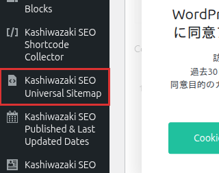

インストール・初期設定
Kashiwazaki SEO Universal Sitemap のインストール方法と、サイトマップ生成に必要な基本設定を説明します。
インストール手順
WordPress管理画面から プラグイン > 新規追加 に移動し、「Kashiwazaki SEO Universal Sitemap」を検索します。または、プラグインのZIPファイルを プラグイン > 新規追加 > プラグインのアップロード からアップロードします。
「今すぐインストール」をクリックし、インストール完了後「有効化」をクリックします。
管理画面の左メニューに「Kashiwazaki SEO Universal Sitemap」が追加されます。クリックして設定画面を開きます。

有効化直後から、デフォルト設定でサイトマップの生成が開始されます。必要に応じて以下の設定を調整してください。
基本設定
生成モード
サイトマップの生成モードを選択します。サイトの規模やサーバー環境に応じて最適なモードを選んでください。
| モード | 説明 |
|---|---|
| 静的生成 | サイトマップをXMLファイルとしてサーバーに保存します。アクセス時のサーバー負荷が最小です。大規模サイトに推奨します。 |
| 動的生成 | リクエスト時にサイトマップをリアルタイムで生成します。常に最新の状態が反映されますが、サーバー負荷がやや高くなります。 |
静的生成モードでも、コンテンツの公開・更新・削除時にサイトマップは自動的に再生成されます。通常の運用では静的生成モードが推奨されます。
サイトマップタイプ
生成するサイトマップの種類を選択します。複数のタイプを同時に有効にできます。
| タイプ | 説明 |
|---|---|
| 投稿タイプ別サイトマップ | 投稿・固定ページ・カスタム投稿タイプごとにサイトマップを生成します。 |
| 画像サイトマップ | 投稿内の画像情報を含むサイトマップを生成し、画像検索での露出を向上させます。 |
| 動画サイトマップ | 動画コンテンツのメタデータを含むサイトマップを生成します。 |
| ニュースサイトマップ | Google News向けのサイトマップを生成します。直近48時間以内の記事が対象です。 |
GZIP圧縮
サイトマップのGZIP圧縮を有効にすると、ファイルサイズを大幅に削減できます。大規模サイトでは帯域幅の節約とレスポンス速度の向上に効果があります。
GZIP圧縮を有効にする場合、サーバーがGZIP配信に対応していることを確認してください。多くのモダンなホスティング環境ではデフォルトで対応しています。
自動分割
サイトマップ内のURL数が50,000件を超えると、XMLサイトマップの仕様に従って自動的にサイトマップインデックスファイルと複数のサイトマップファイルに分割されます。この設定は自動で行われ、手動での操作は不要です。
リライトルール
プラグインはWordPressのリライトルールを自動的に登録し、クリーンなURLでサイトマップにアクセスできるようにします。例えば https://example.com/sitemap.xml のようなURLでアクセス可能になります。
リライトルールが正しく動作しない場合は、設定 > パーマリンク設定 で「変更を保存」をクリックしてリライトルールを再生成してください。